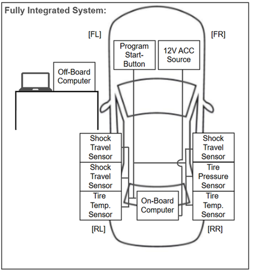
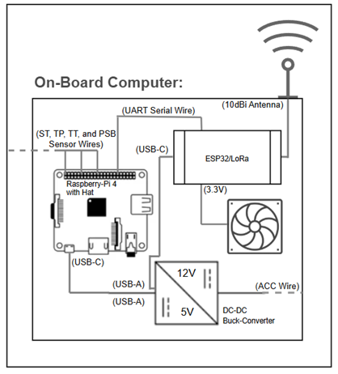
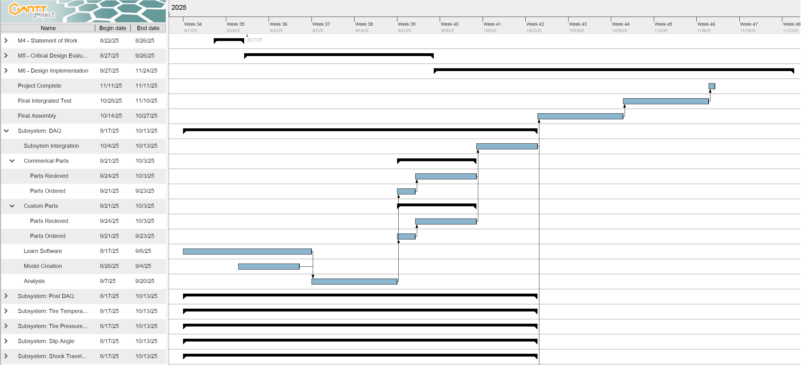
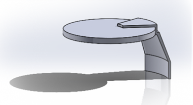
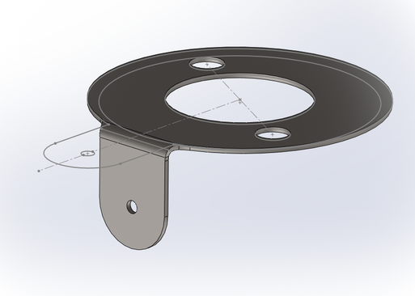

Project 01
Accelera Tire Testing Data Acquisition System
Senior Design Project Finalist | Multisensor Drift-Vehicle DAQ System
As part of a Senior Design Project Finalist team, I contributed to the design, integration, and evaluation of a multisensor data acquisition system mounted to a Nissan 240SX S13 drift car. The system combined onboard and offboard computing with subsystems for tire pressure, tire temperature, and shock travel related measurement so the team could capture, transmit, and review vehicle data in a usable engineering workflow.
System Integration
Supported a fully integrated architecture linking sensors, onboard electronics, and offboard data review.
Subsystem Work
Contributed directly to the Tire Pressure Sensor and Slip Angle portions of the project report and design work.
Team Leadership
Supported project coordination, communication, and execution while contributing to system evaluation and subsystem development.
- Worked on a senior design system that combined DAQ hardware, software, communications, and multiple sensing subsystems for drifting applications.
- Served in a team lead role, helping manage communication, coordination, and progress across the senior design effort.
- Contributed to technical work documented in the Tire Pressure Sensor, Slip Angle Sensor, Glossary, System Evaluation, Tolerance and Sensitivity, and Conclusions sections of the final report.
- Used design-analysis methods such as weighted decision matrices, Pugh matrices, and FMEA-informed risk thinking across subsystem development.
- Supported system evaluation through inspection-based verification and structured testing, including stationary, vibration, distance, and tire-sensor accuracy checks.
- Helped translate subsystem concepts into schematics, CAD-supported packaging decisions, and final integrated-system documentation.
- Presented the project as part of a Senior Design Finalist team, reinforcing both technical execution and communication quality.
Project Photos expand to view visuals




Design Evolution
These bracket visuals show the progression from an earlier concept to the final product through material selection, stack-up analysis, prototyping, and dimensional inspection.
Before

Earlier concept used as the starting point before packaging, mounting, and design refinement.
After

Final product developed through material selection, stack-up analysis, prototyping, and dimensional inspection to better understand tolerance and fit.